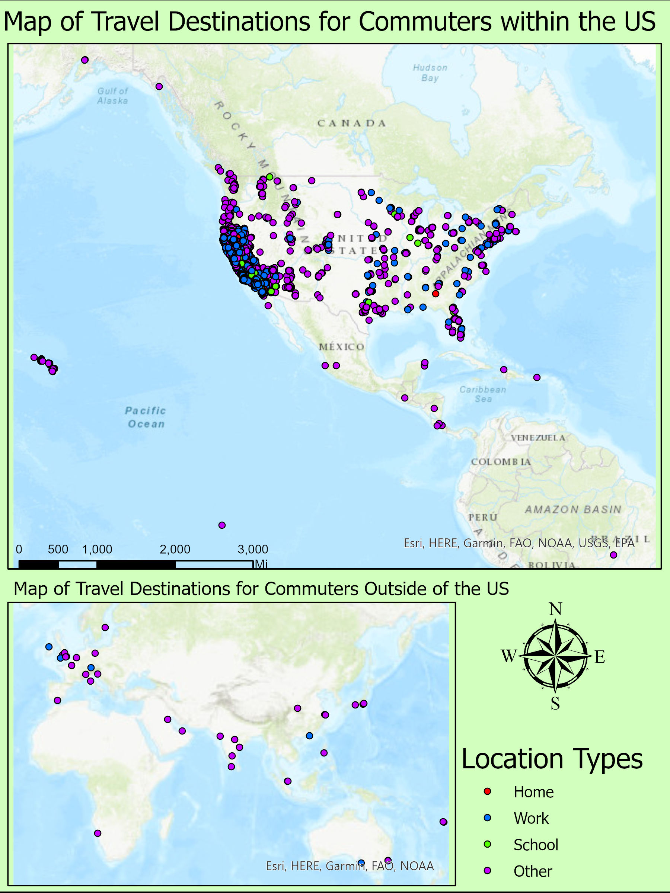
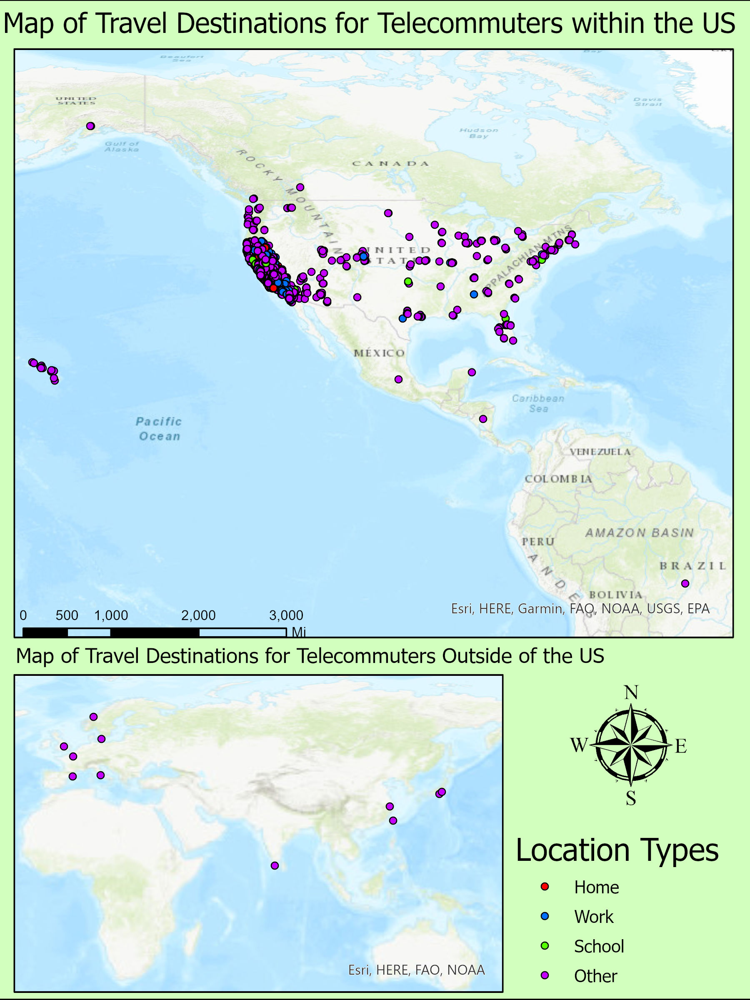
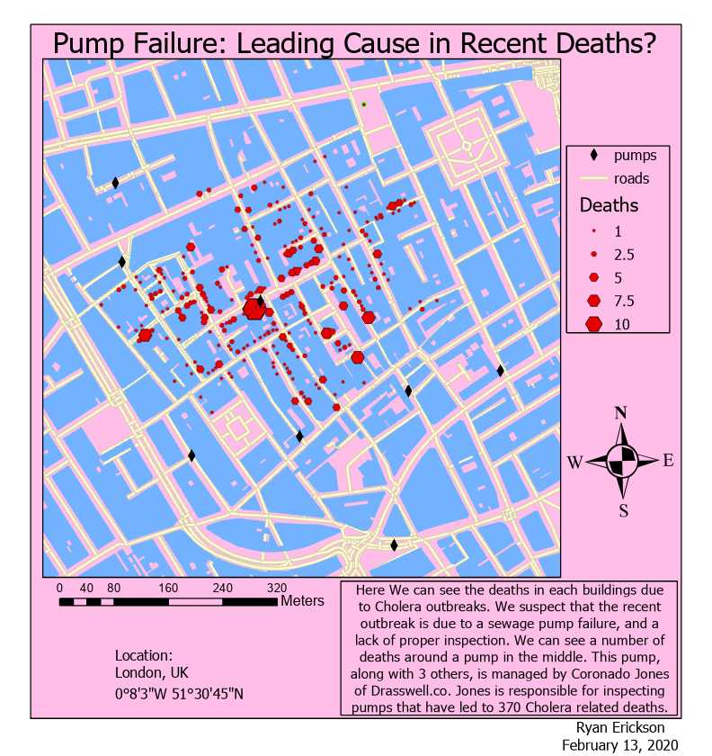
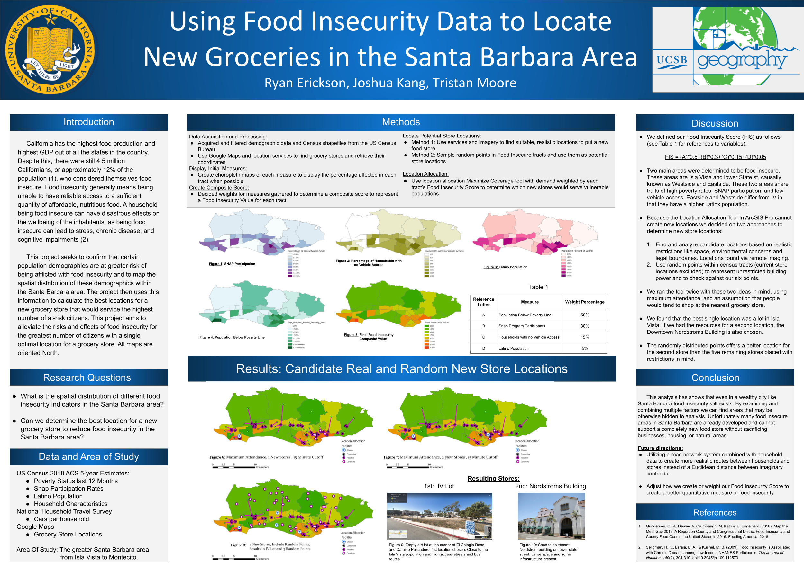
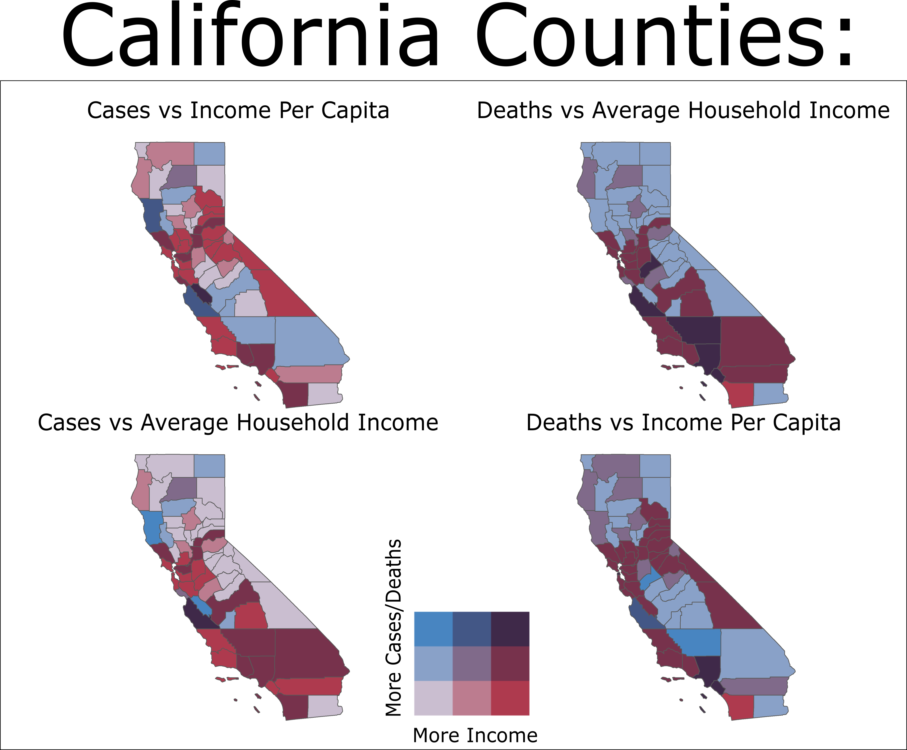
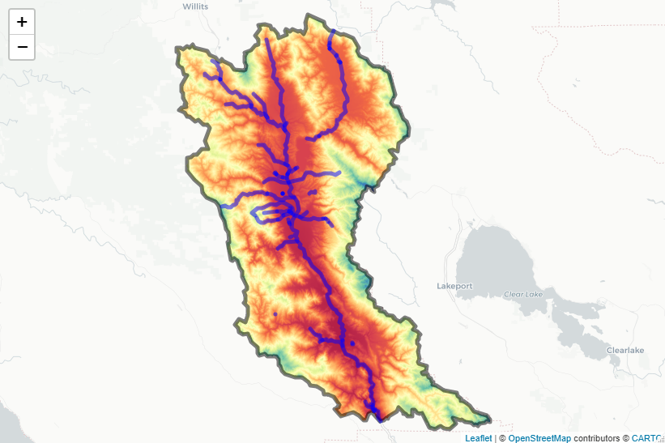
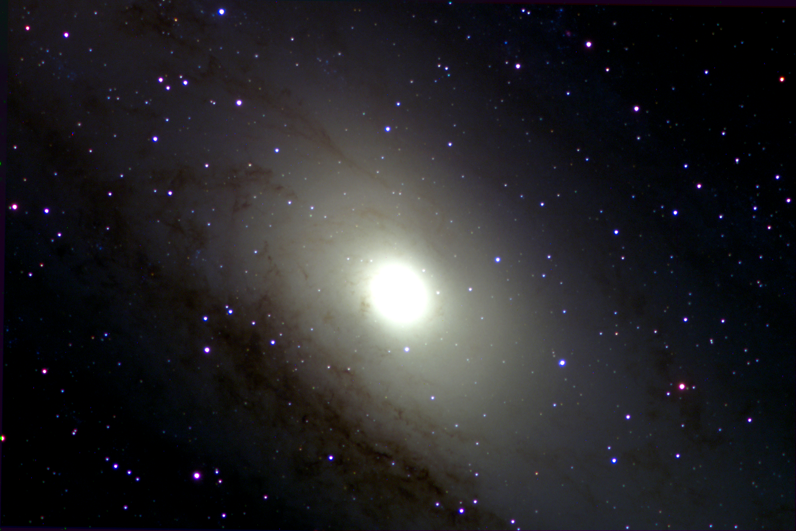
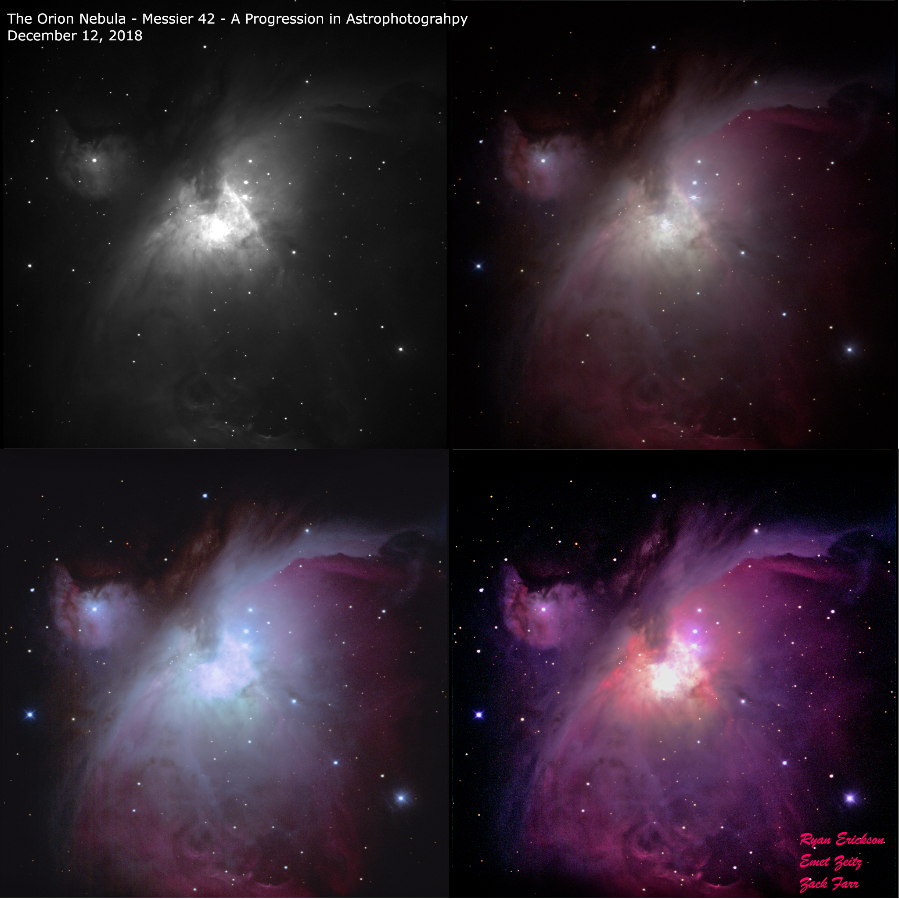

ArcMaps - Maps I created in ArcMap Pro, by ESRI
Geog 199

This is from the independent studies class I took with Kostas Goulias. Here I had to go through NHTS data to create a spatial distribution of telecommuters and commuters. The second map isn't much different, depicting telecommuters and their travelling habbits throughout the US.

I did this in ArcMap, and I would have loved to revisit these maps and the data in R, however the COVID 19 pandemic cut the time I was supposed to meet and interact with my adviser.
London Pump Analysis

Here is a map I created in a class at UCSB in which we digitally replicated the Broad Street cholera outbreak, a severe outbreak of cholera that occurred in 1854 near Broad Street in the Soho district of the City of Westminster, London, England. This was an assignment to get us used to the idea of solving problems using the power of GIS. After displaying the locations and numbers of deaths due to cholera, we deduced that the number of these deaths were exceptionally higher near sewage pumps, leading to the theory that these pumps were mismanaged/poorly inspected. These same deductions were the same found by John Snow (not the GOT version) who at that time had found the same results.
Geog 176 Series Result

A poster I created with a fantastic group for my Geography 176C class, the final course in a Geographic Informational Sciences series. Here we had to collect all our own data and come up with a GIS related question/theory, display, and present our findings to our peers. All edits were done in ArcGIS Pro 2.3.x
R - Maps and Research I conducted in R
Introduction to Research
California COVID-19 Transmission Rate vs Income Display

This is a basic bi-variate map displaying the case and death relationships to average county income. Here anything that is more red indicates a higher average income, and low average deaths while anything more blue indicates a higher death and case count in areas that have lower average income. There are two types of income data, household income and per capita income to see if there's any variation in results. The case and death counts have also been normalized to 100,000 people, which makes areas such as LA and San Francisco (areas with high counts but due to extremely high populations)
Flooding Analysis Start Map

Here you see the beginnings of a flooding analysis raster. For fear accidentally sharing confidential resources and out of respect for my peers, I did not want to display data that [was] in the process of being published. This is a basic map consisting of a DEM Raster and Poly lines representing the Russian River in California that is the beginning for flood prediction and analysis.
Physics - Astrophysics and Biophysics
Class Presentations
Andromeda Galaxy

I made this picture for an astrophysics class that focused on observational methods and data structures. I was very new to the concept of programming at the time, which was well recieved by the professor at the time. The result of this photo was thanks to the many programs dedicated to .fts file aggregation and display like AstroArt.

Astroart 9 is a program commonly used for image processing, analysis, astrometry, photometry, camera and telescope control. Using the star atlas map it provides, we set a series of reference stars with known magnitudes. Using astroart, calculations of unknown magnitudes can be used for the stars accross the rest of the image. Using the calculated B-V magnitudes of those stars allows one to calculated the associated temperature for use in light inteisity conversions. These allow the .fits file to be represented as a .tif file, allowing for further post-processing of the images in software like GIMP.

Orion Nebula

This image comes from a collection of .FITS files gathered from the Las Cumbres Observatory (LCO). The class had access to the network of telescopes and we were allowed to put in requests to objects in space. This particular final project ended in the tracking of 4-Vesta, one of the largest and most massive asteroids in the asteroid belt. Using photoshop tools like the GNU Image Manipulation Program (GIMP), layers representing red, blue, and green (RBG) intensties can be overlaid to produce the expected color of the image if one were to be close enough to the entity to observe it.